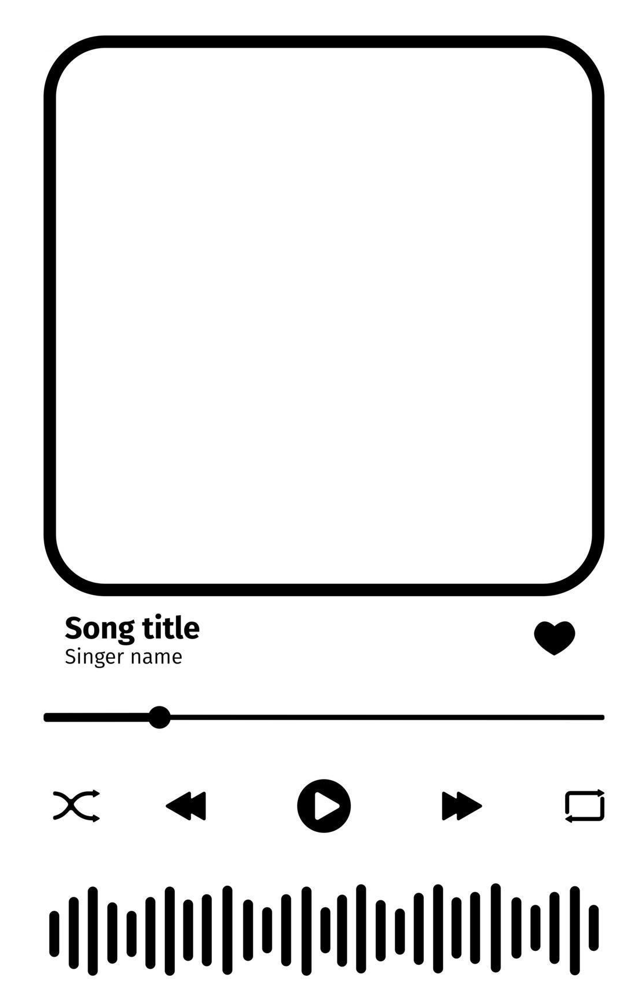
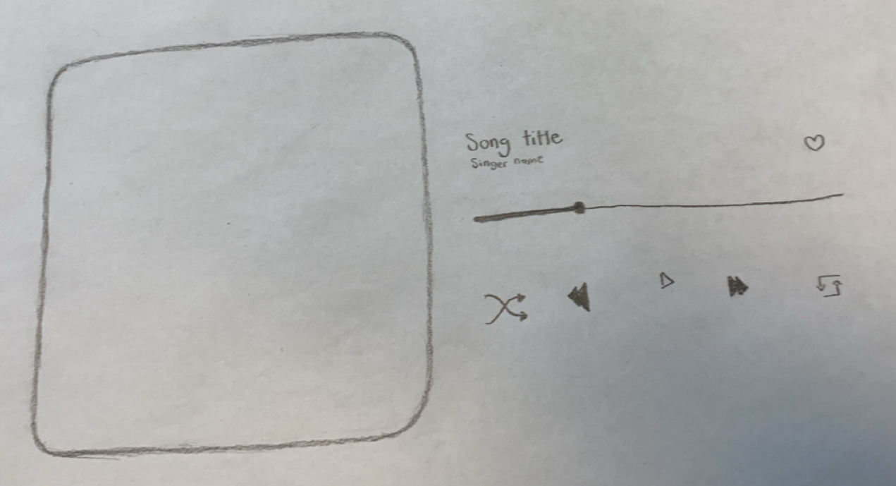
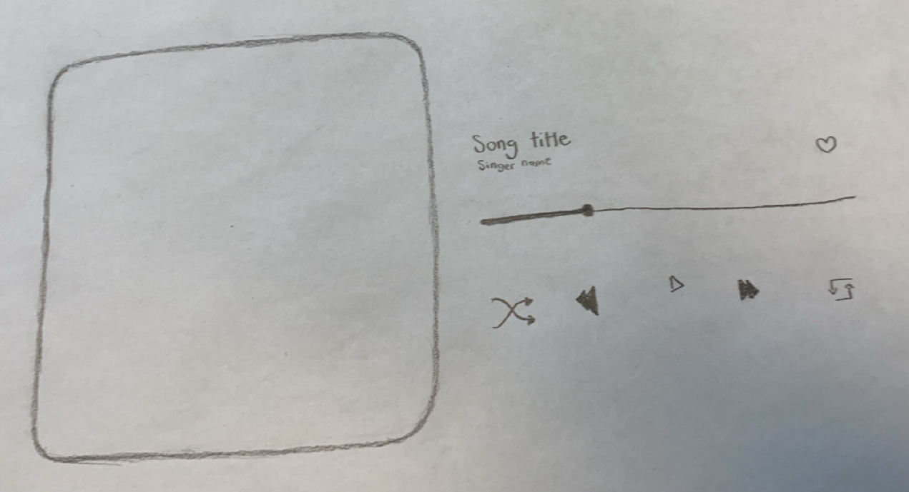
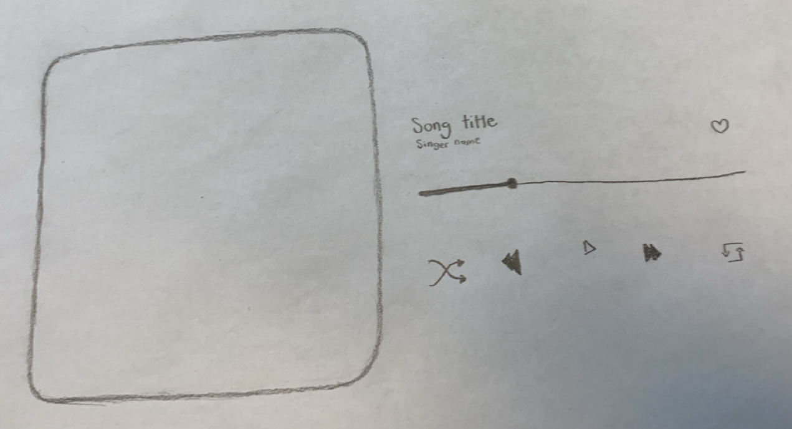

 


My music player is all about capturing the warmth and depth of R&B, which is why I chose a pink theme that makes it feel personal and nostalgic. Pink gives it a soft, intimate vibe that fits perfectly with R&B, but I mainly chose pink because it is my favourite colour. Frank Ocean for example, creates music that feels both personal and universal, and that's the kind of experience I want my music player to give.
"Use this space to describe any more images or case studies."